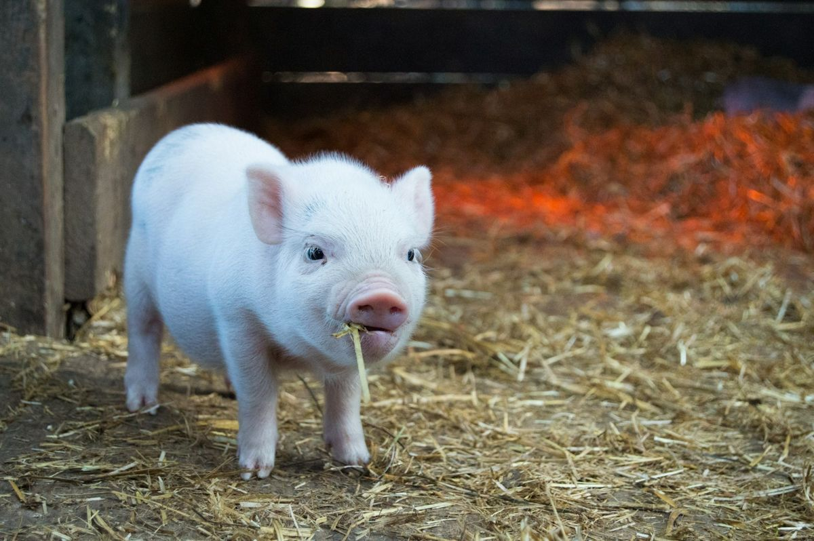

How it works
Reserve
Join the share list and put down a deposit — $250 for a whole hog, $150 for a half. The deposit holds your animal and is credited to your final invoice.
We raise your hog
Your hog is raised here on pasture, on our batch calendar, the same way we raise all our pigs.
Butcher date
When your batch reaches finish weight, we set the butcher date and let you know your hog’s hanging weight.
Processing
Your hog is processed at Mt. Angel Meat (Mt. Angel, Oregon). You fill out a cut sheet and choose your cuts — chops, roasts, bacon, ham, sausage, and more.
Pickup
You pay the balance to us and the processing to the processor, and pick up your boxed, labeled pork.
Pricing, in plain words
Shares are priced per pound on hanging weight — the weight of the hog after harvest, before cutting. Your deposit comes off the top of your final invoice. Processing (kill fee and cut & wrap) is paid by you, directly to Mt. Angel Meat, at their current rates.
Our per-pound price for the next batch is being finalized from our cost records right now. Join the share list and you’ll get the price — and first pick of butcher dates — before reservations open to everyone else.
What you get
A finished whole hog typically hangs at 180–240 lb. After cutting, roughly two-thirds to three-quarters of that lands in your freezer as packaged pork — chops, roasts, ribs, bacon, ham, ground pork, and sausage, cut the way you asked for them. A half share is the same, in half the quantity, from one side of the animal.
Example math — round numbers, not our price
So there are no surprises, here’s how the bill works on a sample whole hog:
| Hanging weight | 200 lb |
|---|---|
| Example price | $5.00 / lb hanging |
| Owed to the farm | 200 × $5.00 = $1,000 |
| Deposit credited | − $250 |
| Balance to the farm | $750, due at the butcher date |
| Processing | Paid by you to Mt. Angel Meat (kill fee + cut & wrap at their current rates) |
The $5.00/lb above is an example to show the math only. Our actual per-pound price is announced to the share list first.


Questions we hear
When are the butcher dates?
Shares move on our batch calendar, so dates are set per batch. Share-list members hear the dates — and get first claim — as soon as a batch is scheduled.
What if I only want a half?
Order a half share — same process, half the pork. Or split a whole hog with a friend or another family; one deposit holds it, and the processor boxes each half to your own cut sheets.
When do I pay?
The deposit when you reserve, the balance to the farm at the butcher date, and processing to Mt. Angel Meat when you pick up.
Where do I pick up?
At Mt. Angel Meat in Mt. Angel, Oregon — they’ll have your boxes labeled and frozen, ready to load.
Do I choose my own cuts?
Yes. You’ll fill out a cut sheet with the processor — thickness of chops, roast sizes, how much goes to sausage and ground, and how the hams and bacon are cured.